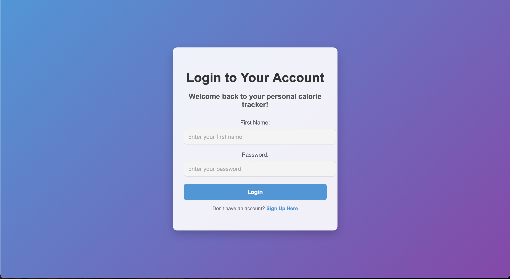

Palm VLA Research Platform
Blender simulation, teleoperation, and synthetic data for palm crown spraying and trimming.
University of Hawai'i at Mānoa | Information and Computer Science Department
I am currently building a palm manipulation VLA pipeline that connects Blender simulation, Isaac Sim teleoperation, and synthetic data generation.
(( Never stop learning ))
Visit the full project directory for deep dives, project photos, and demo media.
Blender simulation, teleoperation, and synthetic data for palm crown spraying and trimming.

Nutrition tracking web app built with HTML, CSS, JavaScript, Go, and PostgreSQL.

ML workflow for classifying predicted income outcomes from structured data.

Browse all projects, technologies, repos, and media in one place.
I am working on a palm tree manipulation system that combines simulation, calibration, and large-scale synthetic data generation.